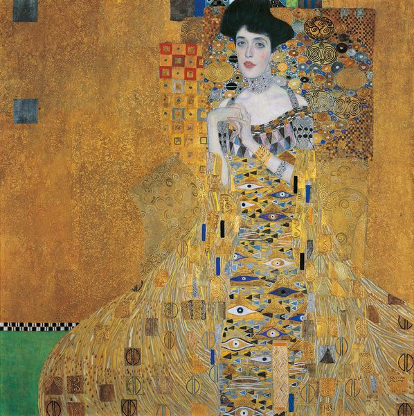
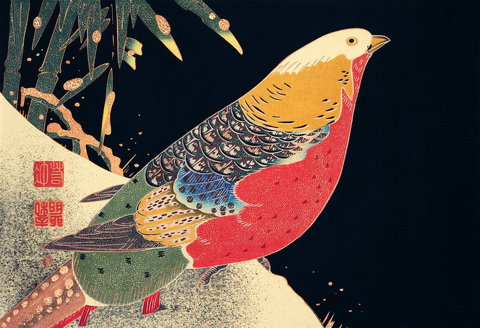
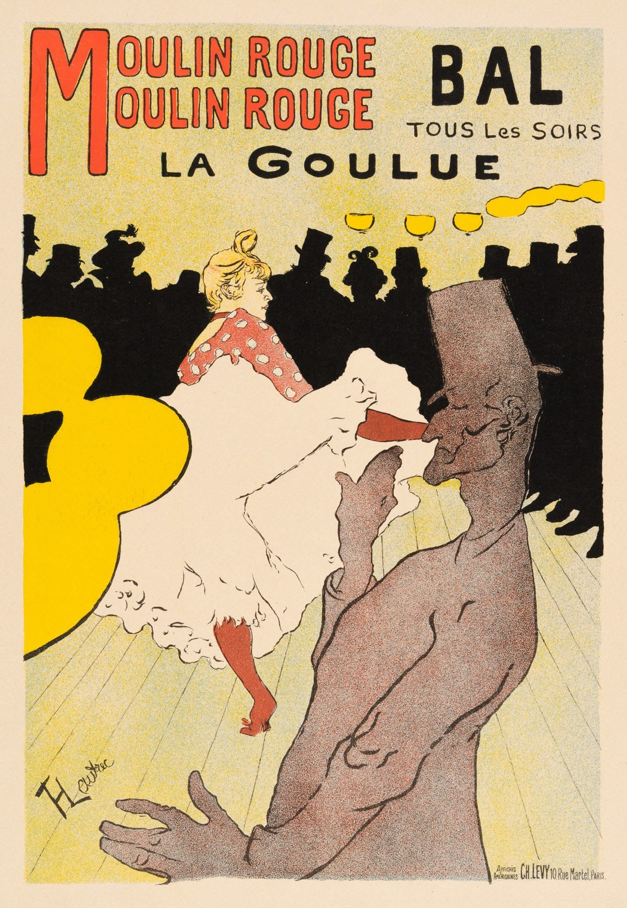
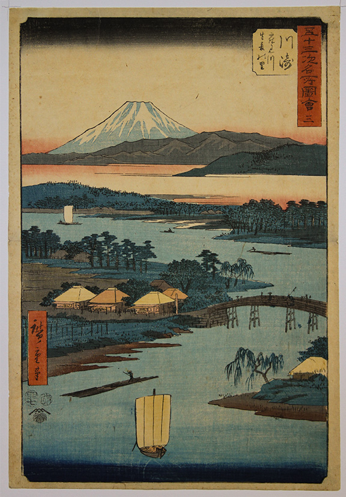
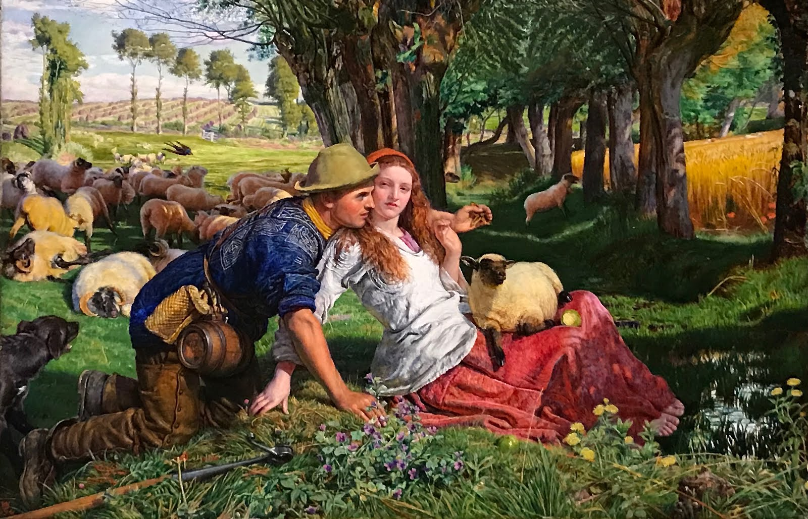

Session 2: Reactions to Victorian Industrialisation
Japonism
WHAT IS JAPONISM?...
Japonism is a term most commonly used to describe the influence of Japanese works on European art. Japonism had great influence over fine art, decorative art and architecture throughout Western culture. During the late 1800s, Japanese woodblock prints became a huge source of inspiration for Western artists. As Japan at this time was in a period of seclusion, only one port was active for trading. The goods tended to be shipped, wrapped in the woodblock prints, as they held little value in Japan. People like the French and Dutch got hold of these prints and came to understand their beauty. This is when the Western world began to adopt an interest in the Japanese style, inspiring artists like Vincent Van Gogh, Claude Monet and Gustav Klimt.
Gustav Klimt

Gustav Klimt was an Austrian painter born in 1862. Klimt was one of the founding members of the Vienna Secession, an art group that aimed to help and inspire younger artists. Japanese art was thought to be first introduced into Viennese society by Klimt himself.

Klimt drew much inspiration from the Japanese artist Ito Jakuchu. This can be seen in Klimt's 'Portrait of Sonja Knips' and Jakuchu's 'Golden Pheasant and Bamboo in the Snow'. Compositionally, both pieces are very similar. Klimt uses the intersection of two diagonals as well as a horizontally oriented composition. The main focus in each piece is positioned in such a way that the viewer's eye is drawn into the composition. In effect, creating a repoussoir effect.
Toulouse-Lautrec

Henri de Toulouse-Lautrec was a French painter, printmaker and illustrator. He, like many other artists, was greatly influenced by the style of Japanese woodblock prints. Toulouse-Lautrec gained most of his inspiration from the nightlife of Montmartre in Paris. Ukiyo-e was especially influential to Toulouse-Lautrec's work. Works from artists like Utagawa Hiroshige and Katsukawa Shunko had arguably the greatest impact on the French painter.

This is a woodblock print by the Japanese artist Utagawa Hiroshige and is a perfect example of where Toulouse-Lautrec gets his inspiration from. You can clearly see that in Toulouse-Lautrec's 'Moulin Rogue', the Japanese influence really begins to show. From the use of dark, bold areas, to crisp, clean lines, 'Moulin Rogue' establishes a clear link to the Japanese style.
Before Japonsim...

Before Japonism(e) became a known artistic movement, the pre-Raphaelites were the major established group. The pre-Raphaelites were a secret society of aspiring artists, who's paintings tended to depict beautiful scenery, with a focus on realism. Each painting was carefully constructed, with clear attention to detail; every brush stroke is there for a reason.